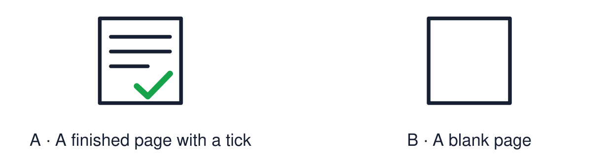

Arrival choices
Previous lesson reminder:

Start with 1 and 2. Try 3 and 4 when ready. Reading and exact scribing are available.
1 Which word joins an answer to its reason?
Support: Use the reminder strip or talk it through with an adult.
2 Which meaning fits reflection?
Support: Choose: Looking back at what you have learned OR Work that shows what you know or can do.
3 Name one festival symbol and its meaning.
Support: Use the model evidence anchor B or read one relevant card together.
4 What makes evidence strong?
Support: Give a reason when ready.
Stretch: use a precise example or explain which detail supports your answer.
Evidence cards
Read, point or listen. Keep the source label with any detail you use.
A The reflection page
Four boxes: a festival symbol, one meaning, one respectful action, one thing I learned.
Source: Authored classroom template
Limit: The page shows a sample of your learning, not all of it.
B A model page
Symbol: diya. Meaning: hope. Respectful action: ask what a symbol means. I learned: Diwali and Hanukkah both use light.
Source: Authored classroom model
Limit: A model shows the layout. Your own choices are what count.
C Evidence this half term
Symbol match, comparison sentence, story sequence, artwork, hope symbol and big-question answer.
Source: Authored classroom resource
Limit: Choose work you can explain. Neat work is not always the strongest evidence.
D Strong evidence
Strong evidence is work you did yourself, that is accurate, and that you can explain.
Source: Authored classroom rules
Limit: An adult note can record what you said or pointed to.
Evidence cards continued
Read, point or listen. Keep the source label with any detail you use.
E1 Assessment source The diya
A diya is a small lamp. Rows of diyas are lit at Diwali. For many people the light stands for good overcoming evil and for hope.
Source: Authored summary; see Hindu American Foundation, Diwali
Limit: A symbol can mean different things to different people.
E2 Assessment source Rangoli
Rangoli are bright patterns made on the floor near the door. Many families make them to welcome guests.
Source: Authored RE summary
Limit: Not every family makes rangoli.
Shared investigation
1. Match each symbol to its meaning.
2. Complete the first box of the reflection page together.
Work with a partner or adult, or use your own table. One person suggests; the other checks the evidence. Swap after one turn. Passing is allowed.
Move or match the cards
| Cards to use |
|---|
| Red poppy |
| Hanukkiah |
| Diya |
Possible labels: Eight nights of light / Hope and good overcoming evil / Remembrance
Support: Show two choices. Read one short instruction. Point, match or say a word, then add a reason when ready.
Further challenge: Explain which piece of evidence is your strongest and why.
Supported independent task
Complete this route only. Make a simple festival reflection page showing what I have learned.
1. Choose a symbol from the picture bank and stick or draw it.
2. Add one meaning word and one respectful action card.
3. Tell an adult one thing you learned. They can write it.
Support: Show two choices. Read one short instruction. Point, match or say a word, then add a reason when ready. Complete the organiser one space at a time. My symbol is ___. It means ___. I showed respect by ___. I learned ___.
An adult may read or scribe your exact response. They should not choose the answer.
Standard independent task
Complete this route only. Make a simple festival reflection page showing what I have learned.
1. Add a festival symbol and one meaning.
2. Add one respectful action.
3. Write or say one thing you have learned.
Support: My symbol is ___. It means ___. I showed respect by ___. I learned ___.
Check the required evidence and revise one detail.
Stretch independent task
Complete this route only. Make a simple festival reflection page showing what I have learned.
1. Complete all four boxes in your own words.
2. Link your symbol to a second festival or idea.
3. Choose your strongest evidence and explain the choice.
Support: Choose the evidence independently. Use the frame only if it helps.
Explain which piece of evidence is your strongest and why.
Exit ticket
Choose a response mode. You may give your answers privately to an adult.
Name one festival symbol and its meaning.
What makes evidence strong?
Support: My symbol is ___. It means ___. I showed respect by ___. I learned ___.
Further challenge: Explain which piece of evidence is your strongest and why.